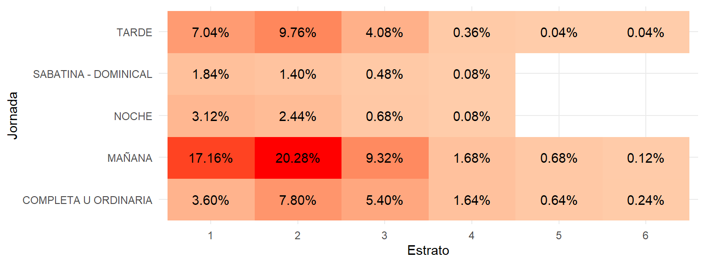

13 Estadística III
Introducción a la inferencia estadística
14 Antecedentes
14.1 Presentación
Estadística 3: Proyecciones y Regresiones para el seminario de Técnicas Especiales de Investigación III, es un curso muy rápido e introductorio que se ofrece a los estudiantes como parte del conjunto de herramientas que hacen parte de la programación completa de la materia. El contenido de las sesiones se plantea de una manera muy específica con el objetivo de dar a conocer a los estudiantes temas tan importantes como las proyecciones y regresiones.
14.2 Justificación
Técnicas Especiales de Investigación III es la tercera de las cuatro materias del ciclo que orienta a los estudiantes en el desarrollo de sus proyectos de grado. Dado que la única estadística que se ofrece en los programas de Ciencias Sociales de Universidad Externado de Colombia se da en segundo semestre y los asistentes al seminario son de séptimo y octavo semestre, se ve la necesidad de iniciar con nuevos temas, que seguramente no vieron en su estadística descriptiva, sobre proyecciones y regresiones para generar en los estudiantes la necesidad de soportar sus investigaciones con datos tratados estadísticamente dado el carácter investigativo de la Facultad.
14.3 Consideraciones
Sobre los contenidos teóricos y/o conceptuales básicos del programa
Es curso está lleno de contenidos prácticos y ligeros que no exigen a los estudiantes mayores conocimientos o destrezas sobre los temas, ni la realización de tareas o trabajos profundos por fuera del aula. Lo que se busca es impartir conocimiento y entregar herramientas básicas de estadística como apoyo a las investigaciones y documentos exigidos como proyectos de investigación.
14.4 Objetivo General
Ofrecer herramientas de estadística relacionadas con proyecciones y regresiones a los asistentes al seminario de Técnicas Especiales de Investigación III, como introducción a nuevos temas de estadística, no contemplados en el programa de estadística descriptiva de primer semestre, para que se vea la pertinencia y necesidad de incorporar procesamiento y análisis estadístico a los proyectos de investigación.
14.5 Objetivos Específicos
Generar conceptos de regresión y pronostico en el marco de las ciencias sociales
Adelantar talleres prácticos que hagan evidentes los conceptos presentados
Orientar la aplicación de estos conceptos en los proyectos particulares de cada estudiante
14.6 Metodología
Curso magistral con talleres prácticos en donde se involucren todos los asistentes mediante el desarrollo de un taller y exposición de resultados.
15 Modelamiento
15.1 Qué es un modelo estadístico
Un modelo estadístico es un conjunto de supuestos matemáticos que se realizan sobre la distribución asociada a un conjunto de datos.
15.1.1 Se ve así
\[ y = \beta_0 + X_1 \beta_1 + X_2 \beta_2 + ... + X_k\beta_k + \varepsilon \]
Pero…
Cada número \(\beta_i\) tiene unas propiedades. Por eso, el reporte de un modelo se vuelve un poco complejo de interpretar.
15.2 Actividad en clase
\[ [realrinc] = \beta_0 + [hrs1] \cdot \beta_1 + \varepsilon \] Revisemos las partes de un modelo
A continuación se presentan los resultados de un análisis realizado a partir de una encuesta estadounidense realizada en 2018. La variable dependiente es cuánto gana el encuestado en un año, en dólares estadounidenses. La variable independiente es cuántas horas trabajó el encuestado la semana pasada. En la encuesta real hay miles de respuestas, pero aquí se seleccionaron 46 de ellas al azar para facilitar la presentación de los resultados.
15.3 Justificación
¿Por qué hacemos modelos?
15.4 Modelamiento
El modelamiento es una técnica esencial en la investigación científica, que permite representar y analizar fenómenos complejos del mundo real. Los modelos son simplificaciones que ayudan a entender, predecir y, en algunos casos, controlar estos fenómenos.
15.4.1 De la realidad a la teoría
El proceso de modelamiento inicia con la observación de la realidad. A partir de estas observaciones, se desarrollan teorías que intentan explicar el comportamiento observado. Los modelos son representaciones de estas teorías, diseñadas para ser más manejables y comprensibles.
15.4.2 Modelamiento estadístico
El modelamiento estadístico utiliza datos para construir modelos que describen y analizan relaciones entre variables. Estos modelos son fundamentales en diversas disciplinas científicas, como la economía, la psicología, la biología y la ingeniería, entre otras.
15.5 Tipos de modelos
Existen diferentes tipos de modelos que se utilizan dependiendo de los objetivos de la investigación. Los principales son:
15.5.1 Descripción
Modelos descriptivos que buscan representar las características básicas de los datos sin hacer suposiciones sobre la estructura subyacente.
15.5.2 Explicación
Modelos explicativos que buscan identificar y entender las relaciones causales entre variables.
15.5.3 Pronóstico
Modelos predictivos que se utilizan para hacer predicciones sobre futuros eventos o comportamientos basados en datos actuales o pasados.
15.6 Modelamiento descriptivo
El modelamiento descriptivo se centra en resumir y visualizar los datos, proporcionando una imagen clara de lo que los datos muestran. Es el primer paso en cualquier análisis de datos, ya que ayuda a entender el contexto y las características básicas del conjunto de datos.
15.7 Herramientas del modelamiento descriptivo
Las herramientas más comunes para el modelamiento descriptivo incluyen:
- Tablas de frecuencia: que muestran cómo se distribuyen los valores de una variable.
- Medidas de tendencia central: como la media, mediana y moda, que resumen el valor típico de los datos.
- Medidas de dispersión: como la varianza y la desviación estándar, que indican cuánta variación hay en los datos.
- Gráficos: como histogramas, diagramas de dispersión y gráficos de caja, que ayudan a visualizar la distribución y las relaciones entre variables.
15.8 Ejemplos del modelamiento descriptivo
- Análisis de la distribución de la edad en una población: utilizando histogramas y medidas de tendencia central para resumir los datos.
- Estudio de la dispersión de precios en diferentes mercados: utilizando gráficos de caja para comparar la variabilidad entre diferentes ubicaciones.
15.9 Modelamiento explicativo
El modelamiento explicativo busca entender las causas y efectos dentro de un conjunto de datos. Este tipo de modelamiento es fundamental para probar hipótesis y teorías científicas, ya que permite establecer relaciones causales entre variables.
15.10 Herramientas del modelamiento explicativo
Las herramientas más comunes para el modelamiento explicativo incluyen:
- Regresión lineal: que permite examinar la relación entre una variable dependiente y una o más variables independientes.
- Análisis de varianza (ANOVA): que se utiliza para comparar las medias de diferentes grupos y determinar si las diferencias observadas son estadísticamente significativas.
- Modelos estructurales: que permiten analizar relaciones complejas entre múltiples variables, incluyendo efectos directos e indirectos.
15.11 Ejemplos del modelamiento explicativo
- Estudio de los factores que afectan el rendimiento académico: utilizando regresión lineal para examinar el impacto de variables como el tiempo de estudio, el apoyo familiar y las características socioeconómicas.
- Investigación sobre los determinantes de la satisfacción laboral: utilizando ANOVA para comparar diferentes grupos de empleados y entender cómo factores como el salario, las condiciones de trabajo y el liderazgo influyen en la satisfacción.
15.12 Modelamiento predictivo
El modelamiento predictivo se utiliza para hacer predicciones sobre eventos futuros basados en datos históricos. Este tipo de modelamiento es clave en áreas como el pronóstico del tiempo, la predicción de ventas, y la identificación de riesgos en finanzas.
15.13 Herramientas del modelamiento predictivo
Las herramientas más comunes para el modelamiento predictivo incluyen:
- Regresión logística: que se utiliza para predecir una variable categórica, como el resultado de una elección o la probabilidad de que ocurra un evento.
- Árboles de decisión: que dividen los datos en ramas para tomar decisiones basadas en reglas simples.
- Modelos de series temporales: que analizan datos secuenciales en el tiempo para hacer predicciones sobre futuros puntos en la serie.
15.14 Ejemplos del modelamiento predictivo
- Predicción del comportamiento del cliente en una tienda en línea: utilizando regresión logística para determinar la probabilidad de que un cliente compre un producto basado en su historial de navegación.
- Pronóstico de la demanda de energía: utilizando modelos de series temporales para predecir el consumo de energía en diferentes estaciones del año.
15.15 Diferencias clave entre describir, explicar y pronosticar
Es fundamental distinguir entre los objetivos del modelamiento descriptivo, explicativo y predictivo:
- Describir se enfoca en resumir y visualizar los datos existentes.
- Explicar busca entender las relaciones causales y los mecanismos subyacentes en los datos.
- Pronosticar se orienta hacia la predicción de futuros eventos o comportamientos basados en patrones observados en los datos.
15.16 Etapas del modelamiento
El modelamiento es un proceso complejo que involucra varias etapas clave, desde la definición del problema hasta la aplicación del modelo para realizar predicciones o comprender un fenómeno. Cada etapa es esencial para garantizar que el modelo sea preciso, interpretable y útil.
15.17 Etapas del modelamiento
Definición del problema: establecer el objetivo del modelamiento.
Recolección de datos: recopilar y preparar los datos que se utilizarán en el modelamiento.
Exploración y preparación: entender la naturaleza y características de los datos disponibles.
Formulación del modelo: plantear el modelo más adecuado según los objetivos. Debe existir una coincidencia entre los conceptos del contexto y las variables del modelo.
Estimación del modelo: ajustar el modelo a los datos para obtener los parámetros que mejor representen las relaciones subyacentes.
Evaluación del modelo: verificar la calidad del modelo utilizando medidas de ajuste y validación cruzada.
Interpretación y presentación de resultados: analizar los resultados del modelo y presentarlos de manera comprensible para el público objetivo.
Aplicación del modelo: utilizar el modelo para hacer predicciones o para comprender mejor el fenómeno en estudio.
15.18 Definición del problema
La definición del problema es la primera y más crucial etapa en el proceso de modelamiento. Aquí se establece el objetivo del estudio, las preguntas de investigación que se desean responder y las hipótesis que se pretenden probar. Una clara definición del problema orienta todo el proceso de modelamiento, asegurando que los esfuerzos se centren en las preguntas más relevantes y que los resultados sean útiles para la toma de decisiones.
En esta etapa, es importante:
- Identificar el fenómeno de interés: ¿Qué es lo que se desea entender, explicar o predecir?
- Delimitar el alcance del estudio: ¿Cuáles son los límites del problema? ¿Qué variables serán incluidas o excluidas?
- Establecer los objetivos del modelamiento: ¿Qué se espera lograr con el modelo? ¿Se busca una descripción, una explicación o una predicción?
15.19 Recolección de datos
La recolección de datos es el proceso de obtener la información necesaria para desarrollar y ajustar el modelo. Los datos pueden provenir de diversas fuentes, como encuestas, experimentos, registros históricos o bases de datos públicas. La calidad y la relevancia de los datos son fundamentales para el éxito del modelamiento.
Durante esta etapa se deben considerar los siguientes aspectos:
- Selección de fuentes de datos: ¿De dónde se obtendrán los datos? ¿Son fiables y relevantes para el problema definido?
- Preparación de los datos: ¿Cómo se limpiarán, transformarán y organizarán los datos para que sean adecuados para el análisis? Esto puede incluir la eliminación de valores atípicos, el manejo de datos faltantes y la normalización de variables.
- Validación de datos: ¿Cómo se asegurará la calidad y precisión de los datos recolectados?
15.20 Preparación y exploración de los datos
La preparación y exploración de los datos es una fase crucial en cualquier proceso de modelamiento, ya que los datos en bruto generalmente no están listos para ser utilizados directamente en un modelo. Esta fase implica una serie de actividades destinadas a comprender, limpiar, y transformar los datos para que sean adecuados para el análisis.
15.21 Formulación del modelo
La selección del modelo es la etapa en la que se elige el tipo de modelo más adecuado para los datos y los objetivos de la investigación. Dependiendo del tipo de problema, se pueden considerar diferentes enfoques de modelamiento, como modelos descriptivos, explicativos o predictivos.
Consideraciones clave durante esta etapa incluyen:
- Naturaleza del fenómeno: ¿Qué tipo de relación existe entre las variables? ¿Es lineal, no lineal, categórica, etc.?
- Complejidad del modelo: ¿Se necesita un modelo simple y fácil de interpretar, o es preferible un modelo complejo que capture más detalles?
- Disponibilidad de herramientas: ¿Qué herramientas de software y métodos estadísticos están disponibles para ajustar el modelo?
- Soporte teórico del modelo: ¿Qué supuestos tiene el modelo? ¿Cuáles son relacionales? ¿Cuáles son distribucionales? ¿Qué hipótesis resuelve?
15.22 Estimación del modelo
La estimación del modelo implica ajustar el modelo seleccionado a los datos, es decir, encontrar los parámetros que mejor representan la relación entre las variables. Esta etapa es crucial para garantizar que el modelo sea una representación precisa y válida del fenómeno en estudio.
Pasos en la estimación del modelo:
- Ajuste del modelo: Utilización de métodos estadísticos para estimar los parámetros del modelo, como la regresión lineal, máxima verosimilitud, o técnicas de machine learning.
- Pruebas de significancia: Evaluación de la significancia estadística de los parámetros estimados para determinar si tienen un impacto real en las variables dependientes.
- Verificación de supuestos: Comprobación de que los supuestos del modelo se cumplen, como la normalidad de los errores, la homocedasticidad y la independencia de las observaciones.
15.23 Evaluación del modelo
La evaluación del modelo es una etapa crítica donde se examina la precisión y la validez del modelo ajustado. Aquí se utilizan diversas métricas y pruebas para determinar si el modelo es adecuado y si puede generalizarse a otros datos.
Aspectos a considerar durante la evaluación:
- Medidas de ajuste: ¿Qué tan bien se ajusta el modelo a los datos observados? Medidas como el R², el error cuadrático medio (RMSE) y la log-verosimilitud se utilizan para evaluar el ajuste.
- Validación cruzada: ¿Cómo se desempeña el modelo cuando se aplica a nuevos datos no utilizados en la estimación? La validación cruzada y la prueba en conjuntos de datos separados son técnicas comunes.
- Análisis de residuos: ¿Los residuos del modelo son aleatorios y no muestran patrones sistemáticos? Este análisis ayuda a verificar la adecuación del modelo.
15.24 Interpretación y presentación de resultados
Una vez que el modelo ha sido estimado y evaluado, la siguiente etapa es interpretar los resultados y presentarlos de manera que sean comprensibles y útiles para los tomadores de decisiones. La claridad en la interpretación es crucial para que los resultados del modelamiento tengan un impacto significativo.
Puntos clave en esta etapa:
- Interpretación de los parámetros: ¿Qué significan los coeficientes estimados en el contexto del problema? ¿Cómo se relacionan las variables independientes con la variable dependiente?
- Visualización de resultados: ¿Cómo se pueden presentar los resultados de manera visual, utilizando gráficos y tablas para facilitar su comprensión?
- Conclusiones y recomendaciones: ¿Qué conclusiones se pueden extraer del análisis? ¿Qué recomendaciones pueden hacerse en base a los resultados del modelo?
15.25 Aplicación del modelo
La aplicación del modelo es la fase final, donde los resultados obtenidos del modelamiento se utilizan para tomar decisiones, hacer predicciones, o profundizar el entendimiento del fenómeno en estudio. Esta etapa puede incluir la implementación del modelo en sistemas de apoyo a la decisión, el uso del modelo para la planificación estratégica, o la publicación de los hallazgos en un contexto académico.
Consideraciones en la aplicación del modelo:
- Implementación: ¿Cómo se utilizará el modelo en la práctica? ¿Qué sistemas o procesos se verán afectados por la implementación del modelo?
- Monitoreo y actualización: ¿Cómo se monitoreará el desempeño del modelo a lo largo del tiempo? ¿Qué mecanismos se establecerán para actualizar el modelo con nuevos datos?
- Evaluación del impacto: ¿Qué impacto tiene la aplicación del modelo en los resultados esperados? ¿Se cumplen los objetivos iniciales del modelamiento?
15.26 Selección de datos
- Selección de características: Identificación de variables irrelevantes o redundantes para simplificar el modelo y mejorar su interpretabilidad.
- Partición en conjuntos de entrenamiento y prueba: Separación de los datos en conjuntos de entrenamiento y validación para evaluar el rendimiento del modelo de manera más robusta.
15.27 Análisis descriptivo
El análisis descriptivo permite generar un diagnóstico sobre el contexto y apoya la selección de los modelos a ajustar.
15.28 Análisis descriptivo univariado
- Media: Es el promedio de los valores de la variable. Proporciona una medida central de la distribución.
- Mediana: Es el valor que divide la distribución en dos partes iguales. Útil para datos sesgados.
- Desviación estándar: Mide la dispersión de los datos en relación con la media. Indica qué tan dispersos están los valores.
- Moda: El valor que aparece con mayor frecuencia en el conjunto de datos.
- Rango: Diferencia entre el valor máximo y el mínimo de la distribución.
15.29 Generación de visualizaciones
- Gráficos de dispersión: Utilizados para examinar la relación entre dos variables numéricas. Pueden ayudar a detectar correlaciones o patrones.
- Histogramas: Representaciones gráficas que muestran la distribución de una variable continua. Ayudan a visualizar la frecuencia de los valores en diferentes intervalos.
- Diagramas de caja (boxplots): Herramientas gráficas que muestran la mediana, los cuartiles y los posibles valores atípicos de una variable. Útiles para identificar la dispersión y la simetría de la distribución.
- Diagramas de violín: Combinan un diagrama de caja con un gráfico de densidad, proporcionando una visión más detallada de la distribución de la variable.
15.30 Análisis correlacional
- Correlación de Pearson: Mide la fuerza y dirección de la relación lineal entre dos variables numéricas.
- Correlación de Spearman: Mide la fuerza y dirección de la relación monótona entre dos variables, sin requerir que la relación sea lineal.
- Correlación de Kendall: Mide la concordancia entre dos variables ordinales, útil para datos con rangos.
- Matriz de correlación: Tabla que muestra las correlaciones entre múltiples variables a la vez. Es útil para identificar rápidamente relaciones fuertes o débiles entre varias variables.
15.31 Análisis de desagregación
- Desagregación de datos: Separar los datos en subgrupos basados en categorías de una variable para examinar patrones o tendencias dentro de cada subgrupo.
- Exploración de la estructura de los datos: Identificar patrones claros en los datos, como tendencias o ciclos, que puedan indicar la necesidad de una transformación.
16 Correlación, desagregación y causalidad
16.1 Correlación numérica - numérica
La asociación de variables es la herramienta que nos permite explorar y entender las relaciones entre diferentes conjuntos de datos. La correlación mide la fuerza y la dirección de la relación entre dos variables.
16.2 Dependencia e independencia lineal:
- Positiva: La relación es tal que a medida que una variable aumenta, la otra también tiende a aumentar. Ejemplo: La relación entre la altura y el peso de una persona.
- Negativa: La relación es tal que a medida que una variable aumenta, la otra tiende a disminuir. Ejemplo: La relación entre el precio de un producto y la cantidad demandada.
- Independiente: No hay una relación aparente entre las dos variables. Ejemplo: La relación entre el color de los ojos y el salario de una persona.
16.3 Correlación lineal
16.3.1 Pearson
- Definición: Mide la fuerza y la dirección de la relación lineal entre dos variables continuas.
- Rango: -1 a 1, donde 1 indica una relación lineal positiva perfecta, -1 una relación lineal negativa perfecta y 0 ninguna relación lineal.
- Cálculo: Se basa en la covarianza de las dos variables dividida por el producto de sus desviaciones estándar.
16.4 Correlación monótona
16.4.1 Spearman
- Definición: Mide la fuerza y la dirección de la relación monótona (no necesariamente lineal) entre dos variables.
- Ventaja: Es más flexible que la correlación de Pearson y puede ser utilizada en casos donde la relación no es lineal pero aún sigue una tendencia consistente.
- Rango: -1 a 1, donde 1 indica una relación monótona positiva perfecta, -1 una relación monótona negativa perfecta y 0 ninguna relación monótona.
16.5 Correlación monótona
16.5.1 Kendall
- Definición: La correlación de Kendall, o tau de Kendall, es una medida de la asociación entre dos variables ordinales que evalúa la relación monótona. A diferencia de Spearman, que utiliza rangos para calcular la correlación, Kendall se basa en la concordancia y discordancia de pares de observaciones.
- Cálculo:
- Concordancia: Dos pares de observaciones están en concordancia si el orden de las observaciones en ambos pares es el mismo.
- Discordancia: Dos pares de observaciones están en discordancia si el orden de las observaciones en un par difiere del orden en el otro par.
- Aplicación: Útil en análisis de datos ordinales y cuando se desea evaluar la relación entre variables con distribución no normal.
16.6 Asociación numérica - categórica
En ocasiones queremos encontra la correlación entre una variable numérica y una categórica.
16.7 Elementos gráficos
Para visualizar la correlación entre una variable numérica y una categórica, se pueden utilizar diversos elementos gráficos:
- Diagramas de caja (boxplots): Muestran la distribución de la variable numérica para cada categoría de la variable categórica.
- Gráficos de barras: Representan la media o mediana de la variable numérica para cada categoría de la variable categórica.
16.8 Asociación numérica - categórica
16.9 ANOVA
El análisis de la varianza es una técnica estadística utilizada para comparar las medias de tres o más grupos y determinar si al menos uno de los grupos es significativamente diferente.
16.9.1 Tipos
- ANOVA de una vía: Examina el efecto de una sola variable independiente (factores) sobre la variable dependiente.
- ANOVA de más vías: Examina el efecto de dos variables independientes sobre la variable dependiente, y sus interacciones.
16.10 ANOVA
Df Sum Sq Mean Sq F value Pr(>F)
ESTRATO 5 43610 8722 112.2 <2e-16 ***
Residuals 2494 193812 78
---
Signif. codes: 0 '***' 0.001 '**' 0.01 '*' 0.05 '.' 0.1 ' ' 116.11 Test Kruskal-Wallis
El test de Kruskal-Wallis es una prueba no paramétrica utilizada para comparar las medianas de tres o más grupos independientes. Es una alternativa al ANOVA cuando los supuestos de normalidad no se cumplen.
16.11.1 Uso
Ideal para datos ordinales o cuando la variable numérica no sigue una distribución normal.
Kruskal-Wallis rank sum test
data: INGLES_PUNT by ESTRATO
Kruskal-Wallis chi-squared = 258.19, df = 5, p-value < 2.2e-1616.12 Asociación categórica - categórica
En ocasiones es necesario encontrar relaciones entre variables categóricas.
16.13 Tablas de contingencia
Tablas que muestran la frecuencia de las combinaciones de dos variables categóricas. Permiten observar la relación entre las variables categóricas.
16.13.1 Uso
Ayudan a visualizar y analizar la dependencia entre variables categóricas.
16.14 Tablas de contingencia

16.15 Prueba de chi cuadrado
Prueba estadística que evalúa si existe una asociación significativa entre dos variables categóricas. Compara las frecuencias observadas en la tabla de contingencia con las frecuencias esperadas bajo la hipótesis nula de independencia.
16.15.1 Uso
Determina si hay una relación significativa entre las variables categóricas.
Pearson's Chi-squared test
data: tb_example$COLE_INST_JORNADA and tb_example$ESTRATO
X-squared = 151.31, df = 20, p-value < 2.2e-1616.16 Prueba exacta de Fisher
Prueba estadística utilizada para determinar la asociación entre dos variables categóricas en tablas de contingencia de 2x2, especialmente cuando las frecuencias esperadas son pequeñas.
16.16.1 Uso
Proporciona una alternativa más precisa a la prueba de chi cuadrado cuando los tamaños de muestra son pequeños.
Fisher's Exact Test for Count Data with simulated p-value (based on
2000 replicates)
data: tb_example$COLE_INST_JORNADA and tb_example$ESTRATO
p-value = 0.0004998
alternative hypothesis: two.sided16.17 Regresión
\[ y = \beta_0 + X_1 \beta_1 + X_2 \beta_2 + ... + X_k\beta_k + \varepsilon \]
Técnica estadística utilizada para modelar y analizar la relación entre una variable dependiente y una o más variables independientes.
16.17.1 Componentes:
- \(\beta_0\): Intersección (constante).
- \(X_i\): Variables independientes.
- \(\beta_i\): Coeficientes de las variables independientes.
- \(\varepsilon\): Error aleatorio.
16.18 Causalidad
La manera óptima de comprobar causalidad es ediante un experimento.
- Definición: Método para establecer relaciones causales entre variables mediante la manipulación controlada de una o más variables independientes y la observación del efecto en una o más variables dependientes.
- Importancia: Permite inferir causalidad en lugar de solo correlación, lo cual es crucial para la validez de los resultados.
- Ejemplo: Un experimento clínico donde se prueba el efecto de un nuevo medicamento en la presión arterial de los pacientes.
16.19 Causalidad
16.19.1 Actividad en clase
En parejas, generar un escrito sobre la causalidad desde la perspectiva de un autor teórico que elijan. Extensión máxima de cuartilla.
17 Modelamiento estadístico
17.1 Qué es un modelo estadístico
Un modelo estadístico es una representación matemática que describe cómo una o más variables aleatorias se relacionan entre sí.
Tiene como propósito simplificar la realidad para entender las relaciones entre variables y hacer predicciones o inferencias.
17.2 Proceso de modelamieto estadístico
Formulación: Revisar la literatura existente. Formular hipótesis claras. Definir el modelo teórico con base en conceptos y teorías previas.
Estimación y ajuste: Implica el uso de métodos estadísticos para estimar los parámetros del modelo, como los coeficientes en una regresión. Una vez estimados los parámetros, se ajusta el modelo para que mejor represente los datos observados.
Validación y evaluación: La validación se refiere a la comprobación de la generalizabilidad del modelo y de sus supuestos. La evaluación se refiere a la bondad de ajuste, qué tanto reflejan los datos.
17.3 Formulación
17.3.1 Partes de un modelo
- Variables dependientes e independientes: Identificación de las variables que serán explicadas y las que se usarán como predictores.
- Relación funcional: La forma en que las variables independientes se combinan para influir en la variable dependiente.
- Término de error: Captura la variabilidad no explicada por las variables independientes.
17.4 Formulación
17.4.1 Especificación matemática
La especificación matemática de un modelo implica:
- Formulación de ecuaciones: Definir cómo las variables independientes afectan a la variable dependiente.
- Definición de supuestos: Establecer los supuestos subyacentes (como la linealidad, independencia, homocedasticidad, etc.).
- Notación y simbolismo: Uso de notación matemática clara para representar las relaciones y supuestos.
17.5 Formulación
17.5.1 Supuestos teóricos
Los modelos estadísticos se basan en varios supuestos teóricos:
- Linealidad: Relación lineal entre variables independientes y dependientes.
- Independencia de errores: Los errores no están correlacionados entre sí.
- Homoscedasticidad: La varianza de los errores es constante.
- Normalidad: Los errores siguen una distribución normal.
17.6 Estimación y ajuste
17.6.1 Parámetros y estimadores
Los conceptos clave son:
- Parámetros: Valores desconocidos en el modelo que describen la relación entre variables.
- Estimadores: Funciones que proporcionan valores aproximados de los parámetros basados en los datos.
- Significancia: Métodos para generalizar el conocimiento subyacente de la muestra hacia la población.
17.7 Estimación y ajuste
El proceso de estimación involucra:
- Selección del método de estimación: Métodos como Mínimos Cuadrados Ordinarios (OLS), Máxima Verosimilitud, etc.
- Cálculo de estimadores: Determinar los valores que minimizan o maximizan una función objetivo.
- Evaluación de los estimadores: Análisis de la eficiencia, sesgo, y consistencia de los estimadores.
17.8 Estimación y ajuste
17.8.1 Estimación puntual
Encontrar los valores de \(\beta\) y \(\sigma^2\) para reproducir \(y\) tan precisamente como sea posible.
Máxima verosimilitud
OLS
PLS
LOESS
17.9 Estimación y ajuste
17.9.1 Intervalos de confianza analíticos
Los intervalos de confianza teóricos proporcionan un rango de valores dentro del cual se espera que se encuentre el verdadero valor de un coeficiente de regresión con un cierto nivel de confianza (generalmente 95%).
17.9.2 Bootstrap
El bootstrap es un método no paramétrico que permite estimar la distribución de un estimador medisnte simulación. Al generar múltiples muestras de los datos originales mediante resampling con reemplazo, es posible recalcular varias observaciones del estimador y tener una muestra aleatoria de este.
17.10 Estimación y ajuste
La prueba de hipótesis global en un modelo de regresión evalúa si al menos una de las variables independientes tiene un efecto significativo sobre la variable dependiente. Esto se realiza mediante la siguiente hipótesis:
Hipótesis nula (H₀): Todos los coeficientes de regresión son iguales a cero, es decir, las variables independientes no tienen efecto sobre la variable dependiente.
Hipótesis alternativa (H₁): Al menos un coeficiente de regresión es diferente de cero, es decir, al menos una variable independiente tiene un efecto significativo.
17.10.1 Procedimiento:
- Cálculo del estadístico F: Se utiliza para comparar el modelo ajustado con un modelo nulo (sin variables predictoras).
- Determinación del p-valor: El p-valor asociado con el estadístico F indica la probabilidad de observar un valor tan extremo como el calculado, bajo la hipótesis nula.
- Decisión: Si el p-valor es menor que el nivel de significancia (α, comúnmente 0.05), se rechaza la hipótesis nula, concluyendo que el modelo tiene al menos un predictor significativo.
17.11 Validación y evaluación
17.11.1 Métricas de evaluación
Para evaluar un modelo se utilizan:
- Coeficiente de determinación (R²): Medida de la proporción de la varianza explicada.
- Error cuadrático medio (MSE): Promedio de los cuadrados de los errores.
- AIC/BIC: Criterios de información para comparar modelos.
- Pruebas de significancia: p-valores, pruebas F, t-pruebas para evaluar la relevancia de los parámetros.
- Exactitud (accuracy) y precisión: métricas para evaluar modelos de respuesta categórica, sensibilidad y especificidad.
- Curva ROC, AUC y matriz de confusión: estadígracos asociados a los modelos de respuesta cetegórica.
- Validación cruzada: uso de datos de ajuste y prueba para el cálculo de las métricas.
17.12 Modelos
17.12.1 Regresión (aprendizaje supervisado)
Modelos donde se predice o explica una variable dependiente a partir de una o más variables independientes.
17.12.2 Ejemplos
Regresión lineal, regresión logística, regresión Poisson.
17.12.3 Métodos multivariados (aprendizaje no supervisado)
Técnicas para descubrir estructuras subyacentes en los datos sin necesidad de una variable dependiente.
17.12.4 Ejemplos
Análisis de componentes principales (PCA), análisis de conglomerados, análisis factorial.
17.13 Modelos de regresión explicativos
El centro de nuestro aprendizaje en ciencias sociales es el modelamiento explicativo.
17.14 Modelos de regresión explicativos
17.14.1 Lineal normal
- Descripción: Modelo que asume una relación lineal entre las variables y que los errores son normalmente distribuidos.
- Aplicaciones: Estimación de relaciones entre variables cuantitativas.
17.14.2 Logit
- Descripción: Modelo utilizado para predecir probabilidades de eventos binarios (0 o 1).
- Aplicaciones: Modelos de decisión, análisis de comportamiento.
17.15 Modelos de regresión explicativos
17.15.1 Poisson
- Descripción: Modelo para contar eventos que ocurren en un intervalo fijo.
- Aplicaciones: Modelado de tasas de ocurrencia, como incidentes de accidentes.
17.15.2 Series de tiempo, Datos panel
- Descripción: Modelos que consideran la dependencia temporal o la estructura de panel en los datos.
- Aplicaciones: Pronósticos, análisis longitudinal.
17.16 Modelos de regresión explicativos
17.16.1 Espaciales (krigging)
- Descripción: Modelos que incorporan la correlación espacial entre observaciones.
- Aplicaciones: Geostatística, análisis de datos georreferenciados.
17.16.2 De efectos fijos y aleatorios
- Descripción: Modelos que permiten controlar por variables no observadas que varían entre entidades.
- Aplicaciones: Análisis de datos donde existen diferencias individuales inobservables.
17.17 Modelos de regresión explicativos
17.17.1 Modelos de supervivencia
- Descripción: Modelos que analizan el tiempo hasta un evento de interés.
- Aplicaciones: Análisis de tiempo hasta la muerte, recurrencia de enfermedades.
18 Modelo de regresón lineal
18.1 Modelo de regresón lineal
La regresión lineal múltiple es un método estadístico que permite modelar la relación entre una variable dependiente continua y dos o más variables independientes (predictoras). Se utiliza para explicar el valor de la variable dependiente basado en los valores conocidos de las variables independientes.
18.2 Formulación
18.2.1 Especificación matemática
\[ y = \beta_0 + X_1 \beta_1 + X_2 \beta_2 + \dots + X_k\beta_k + \varepsilon \]
18.2.2 Terminología
- \(X\) : variables independientes/explicativas.
- \(y\) : variable dependiente - explicada - respuesta.
- \(\beta_0\) es la intersección o término constante.
- \(\beta_1, \beta_2, \dots, \beta_n\) : coeficientes de regresión.
- \(\varepsilon\) : errores/perturbaciones aleatorias.
18.3 Formulación
18.3.1 Parámetros
- Coeficientes de regresión \(\beta\): Indican el cambio esperado en la variable dependiente \(Y\) por cada unidad de cambio en una variable independiente \(X\), manteniendo las demás constantes.
- Error estándar: Medida de la precisión de los coeficientes estimados.
- Término de error \(\varepsilon\): Captura la variabilidad en \(Y\) que no es explicada por las variables independientes.
- Estadísticos (t) y (p)-valor: Utilizados para probar la significancia de cada coeficiente.
18.3.2 Supuestos teóricos
- Linealidad: La relación entre las variables dependientes e independientes es lineal.
- Independencia de los errores: Los errores \(\varepsilon\) son independientes entre sí.
- Homoscedasticidad: La varianza de los errores es constante en todos los niveles de las variables independientes.
- Normalidad de los errores: Los errores \(\varepsilon\) se distribuyen normalmente.
- No multicolinealidad: Las variables independientes no están altamente correlacionadas entre sí.
18.4 Covariables
18.4.1 Covariables numéricas
- Definición: Variables independientes que son numéricas y se utilizan en modelos de regresión para explicar la variación en la variable dependiente.
- Ejemplo: Edad, ingresos, puntuación en una prueba.
18.4.2 Covariables categóricas
- Requieren un procesamiento previo. Se convierten en variables dummy.
- Definición: Variables independientes que son categóricas y se utilizan en modelos de regresión para explorar diferencias entre grupos o categorías.
- Ejemplo: Género, tipo de tratamiento, región geográfica.
18.5 Respuesta
18.5.1 Respuesta numérica
- Definición: Variable dependiente en modelos de regresión que es numérica.
- Ejemplo: Precio de una vivienda, número de ventas.
18.5.2 Respuesta categórica
- El trabajo con respuestas categóricas se sitúa por fuera del modelo de regresión lineal.
- Definición: Variable dependiente en modelos de regresión que es categórica.
- Ejemplo: Aprobado/No aprobado, compra/no compra.
18.6 Comprobación de hipótesis
La evaluación de hipótesis mediante modelos de regresión implica determinar si los efectos de las variables independientes sobre la variable dependiente son significativos y en qué dirección se manifiestan. Este proceso se basa en la prueba de hipótesis para los coeficientes del modelo.
18.6.1 Planteamiento de hipótesis
- Hipótesis nula ((H_0)): Establece que no hay efecto o relación significativa entre la variable independiente y la variable dependiente. En términos de regresión, esto significa que el coeficiente de la variable independiente es igual a cero ((_i = 0)).
- Hipótesis alternativa ((H_A)): Sugiere que hay un efecto significativo. En regresión, esto implica que el coeficiente no es cero ((_i )).
18.7 Proceso de estimación
18.7.1 Intervalos de confianza analíticos
- Cálculo:
- Se basa en los supuestos de normalidad de los errores y en la distribución de \(t\).
- Los límites del intervalo de confianza se calculan como: \(\hat{\beta} \pm t_{\alpha/2} \cdot \text{SE}(\hat{\beta})\), donde \(\hat{\beta}\) es el coeficiente estimado y \(\text{SE}(\hat{\beta})\) es su error estándar.
- Importancia:
- Proporciona una medida de la precisión de los estimadores.
- Ayuda a evaluar la significancia de los coeficientes: si el intervalo no incluye cero, el coeficiente es significativo.
18.8 Proceso de estimación
18.8.1 Bootstrap
- Proceso:
- Generar un gran número de muestras bootstrap (por ejemplo, 1,000).
- Calcular los coeficientes de regresión para cada muestra.
- Obtener la distribución empírica de los coeficientes y derivar intervalos de confianza a partir de ella.
- Ventajas:
- No depende de los supuestos de normalidad de los errores.
- Es útil en situaciones donde los supuestos teóricos pueden no cumplirse o en modelos complejos.
- Limitaciones:
- Requiere un número elevado de simulaciones, lo que puede ser computacionalmente intensivo.
- La precisión de los intervalos bootstrap depende del tamaño de la muestra original.
18.9 Inferencia del modelo
Es necesario estudiar si las relaciones mostradas en el modelo son o no estadísticamente significativas.
18.9.1 Significancia global
¿Existe una relación estadísticamente significativa entre la variable respuesta y las variables explicativas en general?
\[H_0:\beta_1 = \beta_2 = \ldots = \beta_p = 0 \quad\text{frente a}\quad H_1:\beta_j\neq 0 \text{ para algún } j\]
18.10 Inferencia del modelo
Es necesario estudiar si las relaciones mostradas en el modelo son o no estadísticamente significativas.
18.10.1 Significancia particular
¿Existe una relación estadísticamente significativa entre la variable respuesta y una variable explicativa en particular?
\[ H_0:\beta_i = 0 \quad\text{frente a}\quad H_1:\beta_i\neq 0 \]
18.11 Proceso de estimación
18.11.1 Valores ajustados/predichos
\[ \hat{y} = X\hat{\beta} + \hat\beta_0 \]
18.11.2 Residuales
\[ r = y - \hat{y} \]
18.12 Validación de supuestos
Para que los resultados de la regresión lineal múltiple sean válidos, deben cumplirse ciertos supuestos. A continuación se presentan los métodos de evaluación para cada uno:
- Linealidad:
- Método de evaluación: Se evalúa mediante la observación de posibles patrones en los residuos. Puedes utilizar gráficos de residuos frente a valores ajustados para verificar si los residuos están distribuidos aleatoriamente sin patrones evidentes.
- Gráfico recomendado: Gráfico de dispersión de residuos versus valores ajustados.
- Independencia de los errores:
- Método de evaluación: Se verifica mediante pruebas estadísticas como la prueba de Durbin-Watson para detectar autocorrelación en los residuos. Un valor cercano a 2 sugiere que no hay autocorrelación.
- Prueba recomendada: Prueba de Durbin-Watson.
18.13 Validación de supuestos
- Homoscedasticidad:
- Método de evaluación: Se evalúa observando si la varianza de los residuos es constante a lo largo de todos los valores de las variables independientes. Se puede usar el gráfico de residuos estandarizados frente a valores ajustados.
- Gráfico recomendado: Gráfico de residuos estandarizados versus valores ajustados.
- Normalidad de los errores:
- Método de evaluación: Se verifica utilizando gráficos y pruebas estadísticas. Un gráfico de Q-Q (cuantil-cuantil) puede mostrar si los residuos siguen una distribución normal. Además, se pueden realizar pruebas de normalidad como la prueba de Shapiro-Wilk.
- Gráficos y pruebas recomendadas: Gráfico Q-Q y prueba de Shapiro-Wilk.
18.14 Validación de supuestos
- No multicolinealidad:
- Método de evaluación: Se evalúa mediante el cálculo del Factor de Inflación de la Varianza (VIF) para cada variable independiente. Un VIF superior a 10 indica una alta multicolinealidad.
- Métrica recomendada: Factor de Inflación de la Varianza (VIF).
18.15 Métricas de evaluación
- R-cuadrado \(R^2\): Mide la proporción de la varianza en la variable dependiente que es explicada por las variables independientes. Un \(R^2\) alto indica un buen ajuste del modelo.
- R-cuadrado ajustado: Similar al \(R^2\), pero ajustado por el número de variables en el modelo, lo que lo hace más adecuado para comparaciones entre modelos con diferentes números de predictores.
- Error estándar de la estimación: Mide la precisión de las predicciones del modelo.
- Estadístico F: Evalúa la significancia global del modelo; es decir, si al menos una de las variables independientes tiene un efecto sobre la variable dependiente. A partir de este se obtiene un p-valor global.
- p-valor: Para cada coeficiente, indica si la variable independiente asociada tiene un efecto significativo en la variable dependiente.
18.16 Coeficiente de determinación
Permite establecer el porcentaje de información explicada por el modelo. Un valor cercano a 1 (100%) hace referencia a un modelo de ajuste alto.
18.16.1 Coeficiente de determinación
\[ R^2 = \frac{SCR}{SCT} = 1- \frac{SCE}{SCT} \]
18.16.2 Coeficiente de determinación ajustado
\[ R_a^{2} = 1 - \frac{n - 1}{n - p - 1}(1-R^{2}) \]
18.17 Práctica
19 Modelo de regresión logit
19.1 Modelo de regresión logit
El modelo de regresión logit es utilizado para modelar una variable dependiente categórica, generalmente binaria, como una función de variables independientes. Es una forma de regresión no lineal que se usa ampliamente en análisis de datos donde el resultado es dicotómico.
19.2 Formulación
19.2.1 Especificación matemática
La especificación matemática del modelo logit se basa en la función logística. La función de probabilidad para una variable dependiente binaria \(y\) puede expresarse como:
\[ P(y = 1 \mid X) = \frac{1}{1 + e^{-(\beta_0 + X_1 \beta_1 + X_2 \beta_2 + \dots + X_k\beta_k)}} \]
Donde:
- \(P(y = 1 \mid X)\) es la probabilidad de que la variable dependiente sea igual a 1 dado el conjunto de variables independientes \(X\).
- \(\beta_0\) es el término constante o intercepto.
- \(X_1, X_2, \dots, X_k\) son las variables independientes.
- \(\beta_1, \beta_2, \dots, \beta_k\) son los coeficientes asociados con cada variable independiente.
19.3 Formulación
19.3.1 Terminología
- \(X\): variables independientes/explicativas.
- \(y\): variable dependiente, categórica, que toma valores 0 o 1.
- \(\beta_0\): intersección o término constante.
- \(\beta_1, \beta_2, \dots, \beta_n\): coeficientes de regresión que indican la relación entre las variables independientes y la probabilidad de que \(y = 1\).
- \(\varepsilon\): errores o perturbaciones aleatorias (aunque en el modelo logit, la relación es probabilística y no se modelan errores de la misma forma que en la regresión lineal).
19.4 Parámetros del modelo
19.4.1 Parámetros
En el modelo logit, los parámetros \(\beta\) se estiman mediante el método de máxima verosimilitud. Cada parámetro \(\beta_j\) representa el cambio en el logaritmo de las probabilidades (\(\log \frac{P(y=1)}{P(y=0)}\)) asociado con una unidad de cambio en la variable independiente \(X_j\), manteniendo constantes las otras variables.
19.4.2 Supuestos teóricos
- Independencia de las observaciones: Las observaciones deben ser independientes entre sí.
- Linealidad en el logit: La relación entre las variables independientes y el logit de la probabilidad es lineal.
- Ausencia de multicolinealidad: Las variables independientes no deben estar fuertemente correlacionadas entre sí.
19.5 Covariables
19.5.1 Covariables numéricas
Las covariables numéricas son aquellas que se pueden medir cuantitativamente y se introducen directamente en el modelo como \(X_j\).
19.5.2 Covariables categóricas
Las covariables categóricas, al ser cualitativas, se deben convertir en variables dummies (0 o 1) antes de incluirlas en el modelo.
19.6 Respuesta
19.6.1 Respuesta categórica
La variable respuesta en un modelo logit es categórica, usualmente binaria, y toma valores como 0 y 1.
19.7 Comprobación de hipótesis
Se formulan las hipótesis coherentes con la teoría. Se busca comprobar si las hipótesis son ciertas en la población.
19.7.1 Planteamiento de hipótesis
En un modelo logit, se pueden formular hipótesis sobre los coeficientes \(\beta_j\) (la covariable \(j\) tiene un impacto positivo o negativo en la variable respuesta):
- Hipótesis nula (\(H_0\)): \(\beta_j = 0\), es decir, la variable independiente \(X_j\) no tiene efecto sobre la probabilidad de que \(y = 1\).
- Hipótesis alternativa (\(H_1\)): \(\beta_j \neq 0\), es decir, la variable independiente \(X_j\) tiene un efecto significativo.
19.8 Proceso de estimación
19.8.1 Intervalos de confianza analíticos para los parámetros
Los intervalos de confianza para los coeficientes \(\beta_j\) se calculan bajo el supuesto de normalidad asintótica de las estimaciones de máxima verosimilitud. Estos intervalos permiten evaluar la precisión de las estimaciones.
19.8.2 Bootstrap
El bootstrap es un método no paramétrico que se utiliza para estimar la distribución de los coeficientes \(\beta_j\) y sus intervalos de confianza, generando múltiples muestras de la base de datos original.
19.9 Inferencia del modelo
19.9.1 Significancia global
La significancia global del modelo se evalúa utilizando pruebas como la prueba de razón de verosimilitud (Likelihood Ratio Test), que compara la bondad de ajuste del modelo completo con un modelo reducido.
19.9.2 Significancia particular
Se evalúa la significancia individual de cada coeficiente \(\beta_j\) mediante pruebas \(t\). Un valor \(p\) bajo indica que la variable correspondiente tiene un efecto significativo sobre la probabilidad de que \(y = 1\).
19.10 Proceso de estimación
19.10.1 Probabilidades predichas
Los valores ajustados \(\hat{p}\) son las probabilidades predichas de que \(y = 1\):
\[ \hat{p} = \frac{1}{1 + e^{-(\hat{\beta_0} + X_1\hat{\beta_1} + X_2\hat{\beta_2} + \dots + X_k\hat{\beta_k})}} \]
19.10.2 Valores predichos
Los valores ajustados \(\hat{y}\) se obtienen mediante un umbral \(U\) que se encuentra entre 0 y 1:
\[ \hat{y} = I(\hat{p} < U) \]
19.10.3 Residuales
Los residuales en un modelo logit no se calculan de la misma manera que en un modelo de regresión lineal, pero se pueden evaluar las diferencias entre los valores observados y las probabilidades predichas.
\[ \left[y \cdot log(\hat{p}) + (1 - y) \cdot log(1 - \hat{p}) \right] \]
19.11 Validación de supuestos
19.11.1 Linealidad en el logit
Se puede evaluar gráficamente o mediante pruebas específicas que verifican si la relación entre las variables independientes y el logit es lineal.
19.11.2 Independencia de los errores
Se verifica si las observaciones son independientes, usualmente mediante análisis de autocorrelación.
19.11.3 Ausencia de multicolinealidad
La multicolinealidad se evalúa mediante el cálculo de los factores de inflación de la varianza (VIF).
19.12 Métricas de evaluación
19.12.1 Curva ROC
La curva ROC es una herramienta gráfica que evalúa la capacidad del modelo para discriminar entre las clases.
19.12.2 AUC
El área bajo la curva (AUC) cuantifica la capacidad del modelo para distinguir entre las clases. Un AUC de 0.5 indica un modelo sin capacidad predictiva, mientras que un AUC cercano a 1 indica un excelente modelo.
19.13 Métricas de evaluación
La matriz de confusión es una herramienta que permite evaluar el rendimiento de un modelo de clasificación al resumir las predicciones realizadas frente a los resultados reales. Está compuesta por cuatro elementos:
- Verdaderos Positivos (TP): El modelo predice la clase positiva correctamente.
- Falsos Positivos (FP): El modelo predice la clase positiva incorrectamente.
- Verdaderos Negativos (TN): El modelo predice la clase negativa correctamente.
- Falsos Negativos (FN): El modelo predice la clase negativa incorrectamente.
| Predicción Positiva | Predicción Negativa | |
|---|---|---|
| Clase Positiva | Verdaderos Positivos (TP) | Falsos Negativos (FN) |
| Clase Negativa | Falsos Positivos (FP) | Verdaderos Negativos (TN) |
19.14 Métricas de evaluación
19.14.1 Exactitud
La exactitud es la proporción de predicciones correctas sobre el total de predicciones realizadas por el modelo \(\frac{\text{TP} + \text{TN}}{TOTAL}\).
19.14.2 Sensibilidad
La sensibilidad mide la proporción de verdaderos positivos correctamente identificados por el modelo: \(\frac{\text{TP}}{\text{TP} + \text{FN}}\). Indica la capacidad del modelo para identificar correctamente los casos positivos, es decir, cuántos de los casos positivos reales fueron detectados por el modelo.
19.14.3 Especificidad
La especificidad mide la proporción de verdaderos negativos correctamente identificados por el modelo: \(\text{Especificidad} = \frac{\text{TN}}{\text{TN} + \text{FP}}\). Refleja la capacidad del modelo para identificar correctamente los casos negativos, es decir, cuántos de los casos negativos reales fueron detectados por el modelo.